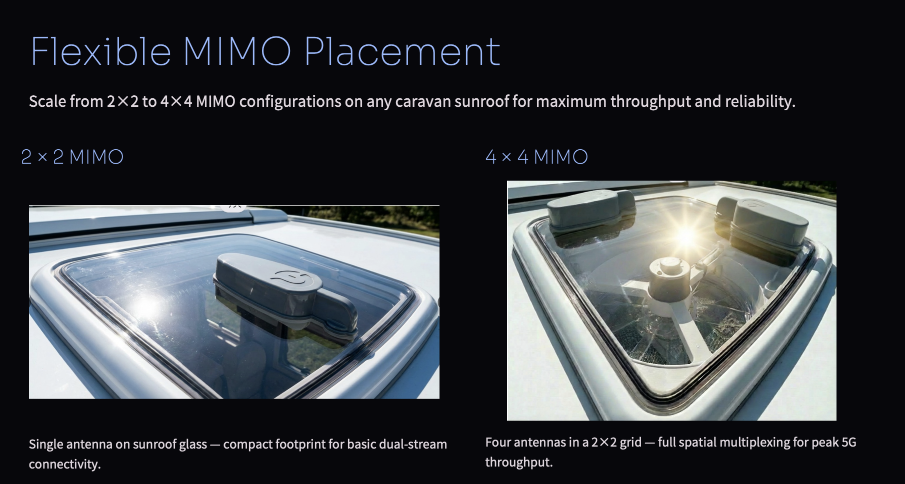
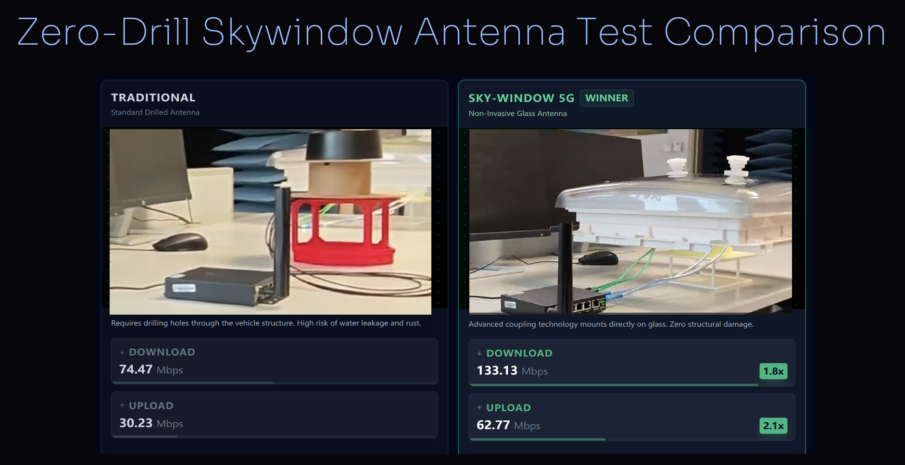

Glassdio Zero-Drill 5G Antenna System for Caravans and RVs
Existing 5G Problem
As illustrated in the attached photo, the current market standard for external antennas relies on a mechanical mounting bolt at the base. To install this device, the user is forced to drill a permanent hole through the vehicle's metal roof. This creates significant market friction because:
-
It permanently damages the vehicle, lowering its resale value.
-
It introduces a high risk of water leaks and rust around the drill site.
-
It requires professional tools and installation skills that most users do not possess.
Our Product Solution
Our product fulfills the market need for high-performance connectivity without the damage. By replacing the invasive bolt shown in the photo with a non-invasive mounting system (such as a magnetic base or suction mount) and a flat-cable window pass-through, we eliminate the need for drilling. This allows users to overcome the signal-blocking metal body of the car (the Faraday Cage effect) while keeping their vehicle’s bodywork completely intact.
Core Innovation
We have developed the world’s first "Through-Window" antenna system capable of achieving a truly omnidirectional radiation pattern without requiring any physical breach of the vehicle's chassis. Unlike traditional solutions that require drilling holes to mount an external antenna, our innovation allows RF energy to pass seamlessly through a standard caravan skywindow, maintaining full signal integrity while leaving the vehicle bodywork untouched.
The Technology
-
The External Radiator (Top): This is a Low-Density, High-Dielectric, Low-Loss DRA (Dielectric Resonator Antenna) constructed using advanced Hi-K RF flexible materials.
-
The Barrier (Middle): The existing 3mm acrylic skywindow of the vehicle acts as the mounting surface rather than an obstacle.
-
The Feeder (Bottom): A Glass DRA antenna located inside the vehicle generates the initial signal with vertical and horizontal outputs.
Product Features
-
Economic Accessibility and Empowerment of the DIY Community: Current market solutions for external antennas are expensive and often require professional installation fees that can exceed the cost of the hardware itself. Our design simplifies the process into a user-friendly, non-invasive installation that anyone can perform. This significantly lowers the total cost of ownership, making high-quality connectivity accessible to a wider range of travelers and empowering the DIY community to upgrade their vehicles without relying on expensive workshops.
-
Protection of Personal Assets and Resale Value: For RV and caravan owners, their vehicle is a major financial investment. Traditional antenna installations require drilling holes in the roof, which introduces the risk of water leaks, rust, and structural damage—all of which severely hurt the vehicle's resale value. By eliminating the need for drilling, our solution protects the owner’s investment, ensuring the vehicle remains watertight and structurally sound, thereby maintaining its market value for future resale.
-
Accelerating 5G Adoption through a Breakthrough Design Concept: We are introducing a breakthrough theoretical concept: utilizing the skywindow (or sunroof) as a primary gateway for signal transmission rather than the metal roof. As 5G networks expand, particularly in the high-frequency 3.5GHz band, signal penetration through metal becomes increasingly difficult. Our successful application of this "glass-mount" theory paves the way for future automotive designs. It proves that high-frequency 5G antennas can be installed cheaply and easily on glass surfaces, encouraging mass adoption of 5G in standard cars and accelerating the rollout of connected vehicle infrastructure.
* Note: Specifications and data may be modified based on the development process.
Installation & Comparison Details
Antenna Installation

Antenna Comparison
